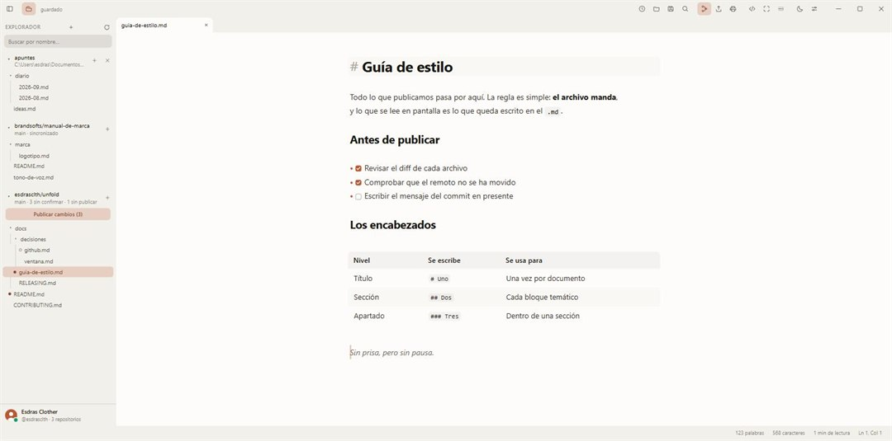
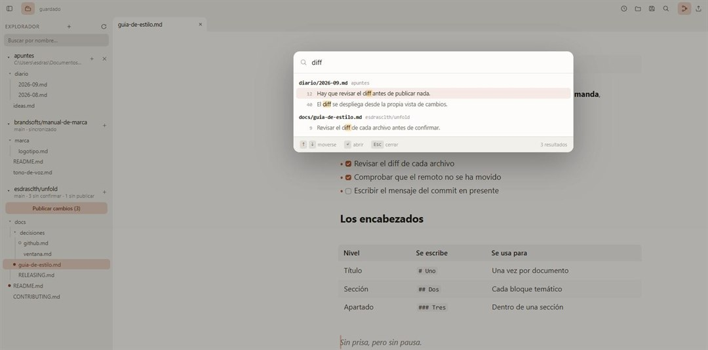
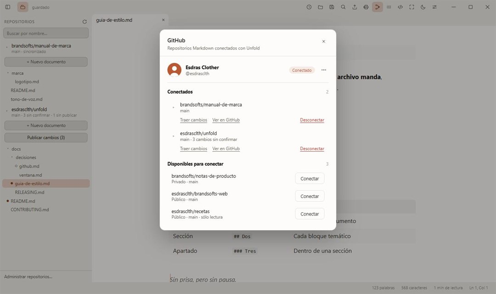
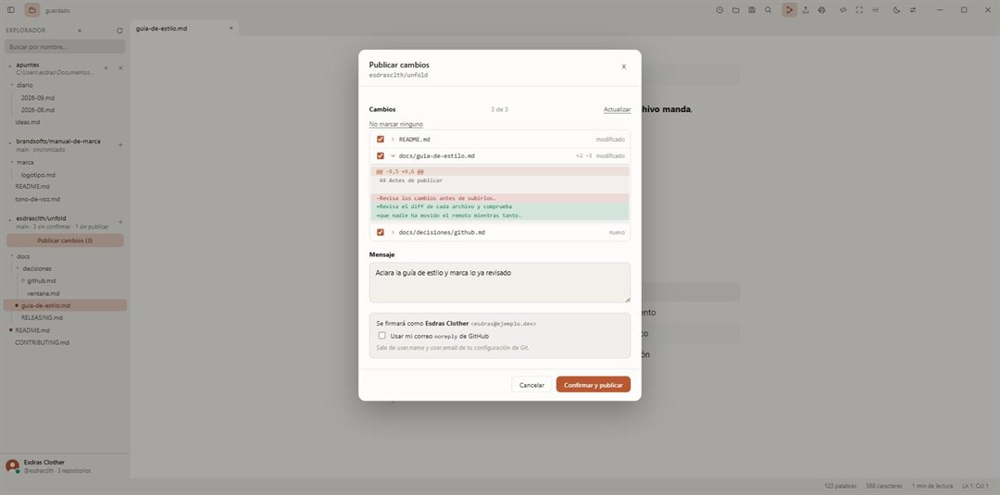

Tus archivos no cambian
El buffer contiene Markdown literal, no un modelo intermedio. Guardar
escribe lo que ya había: abrir un .md con Unfold nunca
reordena tus listas ni normaliza tus comillas.
Sin panel dividido. Sin previsualización aparte. Escribes en un sitio y lees en ese mismo sitio. Y ahora, con tus repositorios de GitHub dentro.
No es un vídeo: es la misma mecánica, dibujada aquí.
El buffer contiene Markdown literal, no un modelo intermedio. Guardar
escribe lo que ya había: abrir un .md con Unfold nunca
reordena tus listas ni normaliza tus comillas.
Pesa poco porque usa el WebView2 que Windows ya trae, en vez de empaquetar un navegador entero dentro del instalador.
Al poner el cursor en una línea sus marcadores reaparecen, atenuados para no dar un tirón visual, y puedes editarlos. Al salir, se ocultan.
La aplicación
El explorador con una carpeta del disco y dos repositorios conectados, y un documento abierto al lado. Los dos temas y doce colores de barra vienen incluidos; pruébalos aquí.

Todo lo que trae
Diecisiete cosas, agrupadas por el momento en el que las necesitas.
Encabezados, negrita, cursiva, tachado, código, citas, listas, tareas, reglas e imágenes.
Se dibujan como tablas y se recorren con Tab, sin dejar de ser Markdown en el archivo.
$…$ y $$…$$ con KaTeX. El bloque YAML del principio se muestra aparte, como ficha.
Desde el navegador, el HTML se convierte a Markdown. Una imagen se guarda junto al documento.
Cada pestaña con su propio historial de deshacer. Los últimos archivos, a un clic.
Sacado del árbol sintáctico, plegable y ajustable. Una almohadilla dentro de un bloque de código no aparece.
Abre una carpeta del disco o conecta un repositorio, y navega su árbol con búsqueda por nombre.
Con Ctrl+Shift+L, en todas tus carpetas y repositorios a la vez. Abrir un resultado lleva a su línea.
Al volver a abrir, recupera pestañas, borradores, cursor y posición sin tocar tus archivos.
Vuelve con el tamaño, el sitio y el estado maximizado con los que la dejaste.
Conecta los que elijas y ábrelos desde el explorador, junto a tus carpetas del disco, con el estado de cada documento al lado.
Despliega cualquier archivo de la vista de cambios y lee lo que añade y lo que quita, línea a línea.
Marcas los archivos, escribes el mensaje y Unfold confirma, sincroniza con el remoto y publica.
HTML autocontenido, en un solo archivo, y PDF a través de la impresión del sistema.
Si lo editas desde otro programa, Unfold avisa en vez de pisarlo al guardar.
Tipografía, tamaño, interlineado, ancho de columna, modo enfoque y máquina de escribir.
Menú contextual para insertar Markdown, o modo Código fuente con Ctrl+Shift+M.

Buscar en todos a la vez. Con Ctrl+Shift+L, en tus carpetas y repositorios juntos. Los resultados se agrupan por archivo y abrir uno lleva el cursor a su línea.
Integración con GitHub · nuevo en 0.3
Conecta los repositorios que quieras y edita su Markdown como cualquier otro archivo. Unfold lleva su propio motor Git: no hace falta tener Git instalado, sólo ve los repositorios que le concedas y nunca guarda tu contraseña.
Un código de ocho caracteres que confirmas en github.com. La sesión se guarda en el Administrador de credenciales de Windows, cifrada por el sistema, y se renueva sola.
Tú decides a cuáles das acceso, y puedes cambiarlo cuando quieras. Unfold clona los que conectes y los deja listos para leer sin conexión.
Los repositorios se navegan en el mismo explorador que tus carpetas, con el estado de cada documento al lado. Marcas qué archivos entran, revisas su diff, escribes el mensaje y Unfold confirma, sincroniza y publica.


Cada documento lleva su estado al lado: sin cambios, modificado, todavía no está en Git, o en conflicto. El repositorio dice su rama, lo que falta por confirmar y lo que falta por publicar.
Lo que entra en el commit es exactamente lo que marcaste. Si un archivo cambia entre que lo revisas y publicas, Unfold se detiene y te lo dice en vez de subir algo que no habías visto.
Antes de subir nada se comprueba el remoto. Si alguien se te adelantó, Unfold lo dice en vez de dejar un rechazo críptico, y tu commit queda a salvo.
Se firma con la identidad de tu configuración de Git, y si no tienes
ninguna, con la dirección noreply de GitHub. Siempre puedes
forzarla con una casilla.
Por dentro
El buffer de CodeMirror contiene el Markdown tal cual. Un plugin recorre el árbol sintáctico de la parte visible y oculta los marcadores con decoraciones, aplicando al texto el estilo que corresponde. Cuando la selección toca un elemento, sus marcadores vuelven a mostrarse para poder editarlos.
Sólo se decora el rango visible, y sólo se recalcula cuando cambia el texto, el viewport o la selección. Por eso sigue siendo fluido en archivos grandes.
Hay dos excepciones. Las tablas y las fórmulas de bloque se sustituyen por
HTML real, y eso altera la altura de las líneas; CodeMirror no admite
decoraciones de bloque desde un plugin de vista, así que viven en un
StateField. El frontmatter también se trata aparte, porque
para Markdown no existe: la primera raya --- es una regla
horizontal y la de cierre convierte lo de en medio en un encabezado.
## TítuloTítulo**negrita**negrita*cursiva*cursiva`código`código- [x] hechohecho> una citauna citaEn un minuto
Unfold-Setup.exe, unos 8,0 MB.
Se instala para tu usuario. No pide permisos de administrador.
La aplicación te avisa sola cuando haya una versión nueva.
Antes de descargar
No. El buffer contiene el Markdown literal y guardar escribe lo que ya había. Unfold no serializa el documento desde una estructura intermedia, así que no reordena tus listas ni normaliza tus comillas.
Sólo los repositorios que le concedas al instalar la GitHub App, y puedes cambiarlos cuando quieras desde github.com. La sesión se guarda en el Administrador de credenciales de Windows, cifrada por el sistema. Unfold nunca ve ni guarda tu contraseña.
No. Unfold lleva su propio motor Git nativo, así que clona, confirma, sincroniza y publica sin depender de un Git externo ni de la línea de órdenes.
Unfold sincroniza antes de subir. Si la historia divergió, se detiene y lo explica en vez de dejar un rechazo críptico: tu commit queda hecho y a salvo, listo para publicarse cuando resuelvas la diferencia. Fusionar desde la propia aplicación es lo siguiente en la lista.
Porque el instalador no está firmado con un certificado comercial, que cuesta unos cientos de euros al año. Los hashes SHA-256 de cada archivo están publicados en las notas de cada versión para poder comprobarlo.
Todavía no: hoy sólo se compila para Windows 10 y 11. El código es abierto y las compilaciones para macOS y Linux están en la lista de lo pendiente, junto con las notas al pie y las ramas y pull requests desde la aplicación.